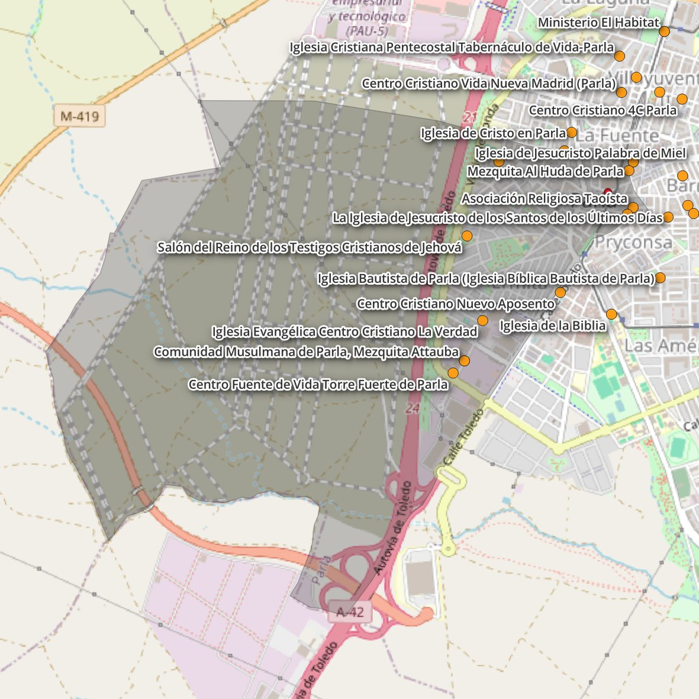
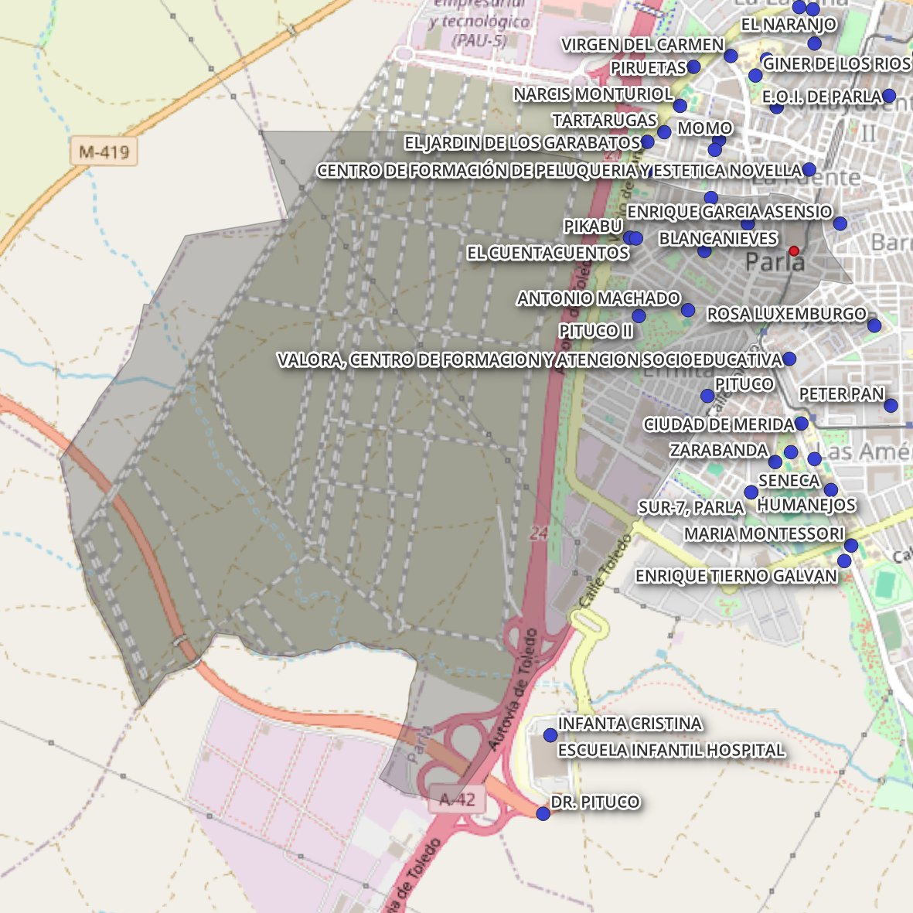

Puntos de interés en el territorio parroquial
Parroquia Nuestra Señora de la Asunción (Parla) · Arciprestazgo de Parla
Entidades religiosas no católicas

10 entidades religiosas no católicas en el territorio de la parroquia.
Evangélicos (5)
- Centro Fuente de Vida Torre Fuerte de ParlaCalle Icíar Bollaín 56, Parla
- Iglesia Evangélica Apostólica del Nombre de Jesús (IEANJ - Parla)Calle Icíar Bollaín 54, Parla
- Iglesia Evangélica Centro Cristiano La VerdadCalle Iciar Bollaín 3 Nave 4, Parla
- Iglesia Evangélica Pentecostal Comademat - EspañaCalle San Roque 15, Parla
- Movimiento Misionero Mundial - Parla (M.M.M.)Calle Paloma 80, Parla
Musulmanes (2)
- Comunidad Musulmana de Parla, Mezquita AttaubaCalle Iciar Bollain 28, Parla
- Mezquita Al Huda de ParlaCalle Dos Hermanas 20 Bajo, Parla
Ortodoxos (1)
- Parroquia Ortodoxa Rumana Santa Anastasia Romana - Parla (Parohia Sfanta Anastasia Romana)Calle Los Arijales 8, Parla
Otras Religiones (1)
- Asociación Religiosa TaoístaCalle Carolina Coronado 16, Parla
Testigos de Jehová (1)
- Salón del Reino de los Testigos Cristianos de JehováCalle Elena Quiroga 3, Parla
Fuente: Registro de Entidades Religiosas del Ministerio de la Presidencia, Justicia y Relaciones con las Cortes. Situación en el mapa: dirección geocodificada con CartoCiudad (IGN) o Nominatim (OpenStreetMap).
Centros educativos

5 centros educativos en el territorio de la parroquia (público: 3, privado: 2).
| Centro | Tipo | Titularidad | Domicilio | Web |
|---|---|---|---|---|
| ANTONIO MACHADO | Colegio de educación infantil y primaria | Público | Calle Lago Tiberíades, 1, 28981 Parla | Página web |
| EL CUENTACUENTOS | Escuela infantil privada | Privado | Calle Fuente Arenosa, 2, 28981 Parla | |
| LA PALOMA | Colegio de educación infantil y primaria | Público | Calle de la Paloma, 45, 28981 Parla | Página web |
| PIKABU | Escuela infantil privada | Privado | Calle las Dehesillas, 7, 28981 Parla | Página web |
| RAMON Y CAJAL | Centro público de educación de personas adultas | Público | Calle Galilea, 11, 28981 Parla | Página web |
Fuente: registro de centros educativos de la Comunidad de Madrid. Solo se recogen los centros de alta.